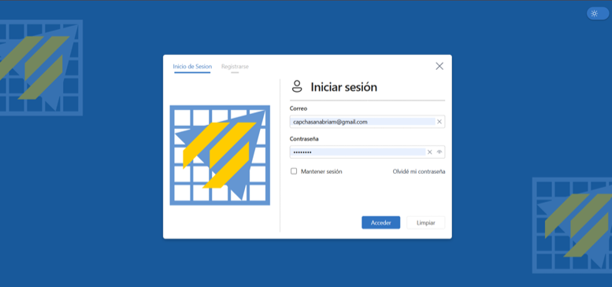

Imagen de experiencia UNCP10 abril 2025 - 25 agosto 2025
Chief Scrum Master
Facultad de Ingeniería de Sistemas - UNCP
Lideré la transformación digital del sistema bibliotecario. Coordiné células de trabajo bajo marcos ágiles como Scrum y XP para mitigar riesgos, eliminar impedimentos y asegurar entregas de software de alta calidad.